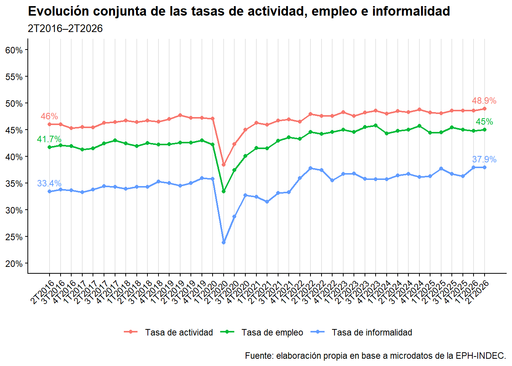
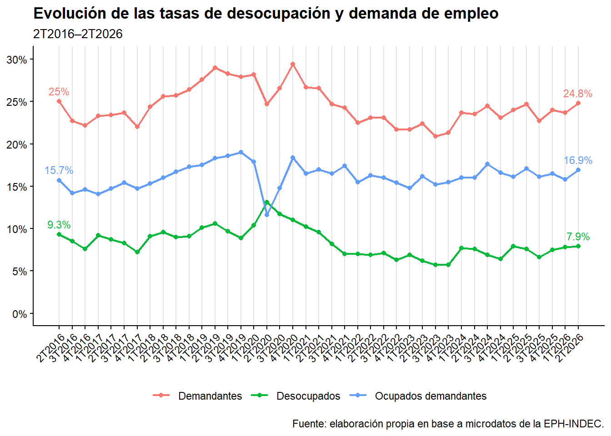
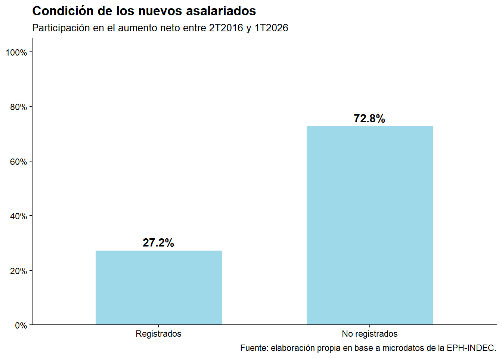
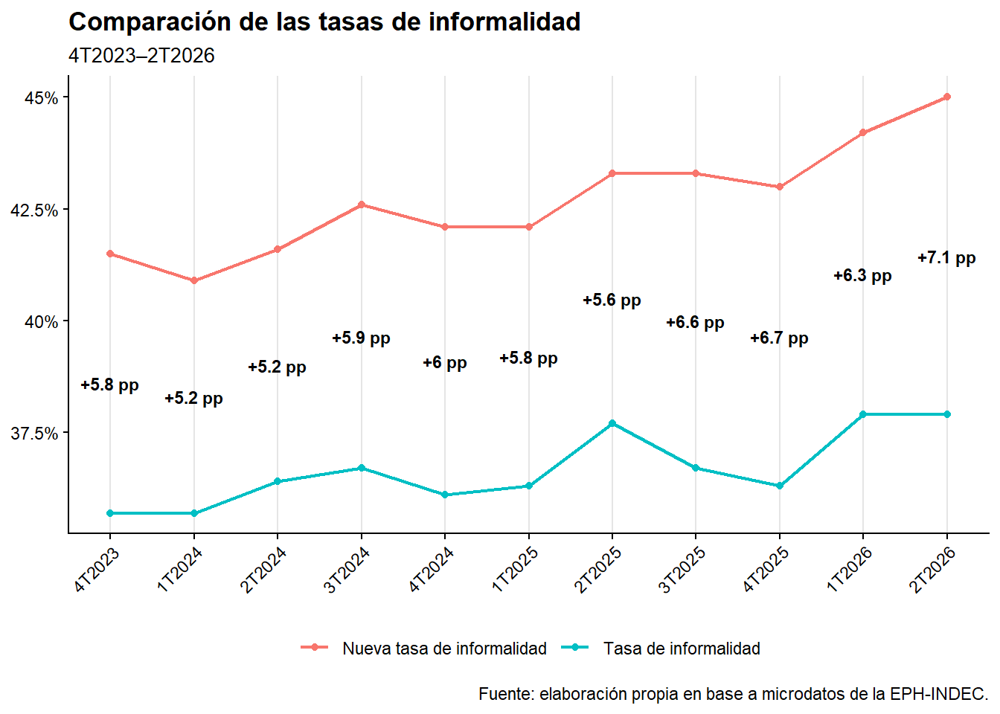
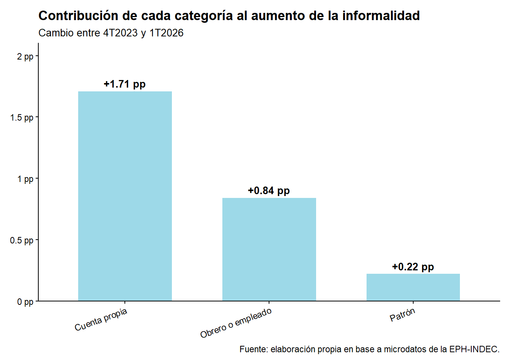

Más cantidad, menos calidad
Evolución del mercado laboral y de la informalidad en Argentina
1 Resumen ejecutivo
El siguiente informe analiza la transformación del mundo laboral argentino durante la última década. El objetivo central es determinar cuantitativamente la demanda de trabajo y las formas ocupacionales que satisfacen, en parte, esa demanda.
Para ello se procesaron y analizaron microdatos de la Encuesta Permanente de Hogares (EPH), siguiendo la hipótesis según la cual el mercado laboral ha atravesado un proceso que podría resumirse como “más cantidad, menos calidad”.
Los resultados, si bien presentan oscilaciones, rupturas y períodos que no pueden analizarse de manera continua debido a modificaciones en las formas de medición, muestran un leve pero sostenido aumento tendencial de las tasas de actividad y ocupación, una demanda de trabajo relativamente constante y un incremento de la informalidad, explicado principalmente por el peso de los cuentapropistas no registrados entre los nuevos ocupados.
2 Introducción
El siguiente informe analiza la transformación del mundo laboral argentino durante la última década. El objetivo central es determinar cuantitativamente la demanda de trabajo y las formas ocupacionales que satisfacen, en parte, esa demanda.
Para ello se procesaron y analizaron microdatos de la Encuesta Permanente de Hogares (EPH), siguiendo la hipótesis según la cual el mercado laboral ha atravesado un proceso que podría resumirse como “más cantidad, menos calidad”.
Los resultados, si bien presentan oscilaciones, rupturas y períodos que no pueden analizarse de manera continua debido a modificaciones en las formas de medición, muestran un leve pero sostenido aumento tendencial de las tasas de actividad y ocupación, una demanda de trabajo relativamente constante y un incremento de la informalidad, explicado principalmente por el peso de los cuentapropistas no registrados entre los nuevos ocupados.
3 Desarrollo conceptual
El mercado laboral argentino ha experimentado en la última década un leve pero sostenido crecimiento, acompañado por transformaciones cualitativas entre las que el aumento del empleo informal constituye uno de los cambios más significativos y persistentes.
Históricamente, la informalidad laboral fue asociada principalmente con empleos de subsistencia y baja calificación, desarrollados en pequeñas unidades productivas, con limitaciones tecnológicas y condiciones laborales precarias (Fernández-Franco, Graña, Lastra y Weksler, 2022). Sin embargo, el debate académico de fines del siglo XX y principios del XXI incorporó una visión más heterogénea del fenómeno, distinguiendo entre un sector informal tradicional o “atrasado” y otro “moderno”, que puede ofrecer mejores condiciones relativas. De este modo, la informalidad no constituye un bloque homogéneo y puede incluir una “capa alta” donde la inserción es voluntaria y no necesariamente un refugio laboral (Maloney, 2004; Günther & Launov, 2012, citados en Fernández-Franco et al., 2022).
El economista Gary Fields (2009, citado en Fernández-Franco et al., 2022) sintetiza las explicaciones sobre la permanencia en el sector informal en tres hipótesis: empleo involuntario como última opción, preferencia voluntaria por beneficios extrasalariales o una configuración dual en la que coexisten mejores y peores empleos.
Desde una perspectiva productivista, la informalidad se vincula con la estructura heterogénea y fragmentada de las economías latinoamericanas. La coexistencia de sectores con distintos niveles de productividad favorece la persistencia de empleos precarios en unidades de pequeña escala y baja capitalización, mientras que los sectores dinámicos no logran absorber toda la fuerza de trabajo. Esta perspectiva también relaciona la informalidad con procesos de subcontratación y tercerización (Fernández-Franco et al., 2022).
El enfoque legalista, por su parte, centra la atención en las condiciones formales de la relación laboral. Desde esta perspectiva, un trabajador puede desempeñarse en una unidad formal y, aun así, carecer de protección social. En Argentina, esta aproximación se operativiza desde 2003 mediante la medición de los descuentos jubilatorios entre los asalariados. Si bien permite construir una serie homogénea, restringe el universo analizado y no capta otras dimensiones de la informalidad y la precariedad laboral. La nueva medición implementada por el INDEC desde 2023 amplía este enfoque al considerar las categorías ocupacionales y la formalidad de las unidades económicas (INDEC, 2025).
Los estudios comparativos también muestran la persistencia de pequeños establecimientos y trabajos de baja y media calificación en América Latina. La relación entre informalidad y nivel de desarrollo, junto con la heterogeneidad del sector informal y la existencia de empleo precario en ámbitos tradicionalmente formales, cuestionan una interpretación exclusivamente dual del mercado de trabajo (Fernández-Franco et al., 2022).
Este marco conceptual plantea los interrogantes que orientan el análisis: ¿qué modificaciones en el mundo del trabajo se encuentran detrás de la tendencia estable —y por momentos descendente— de la desocupación? ¿Cómo se transformó la informalidad durante la última década? ¿Qué categorías ocupacionales impulsan la ocupación en Argentina y qué vínculo tienen con la informalidad?
4 Metodología
Para el desarrollo del informe se utilizaron los microdatos de la Encuesta Permanente de Hogares (EPH) provistos por el Instituto Nacional de Estadística y Censos (INDEC). Se descargaron las bases trimestrales correspondientes al período comprendido entre el segundo trimestre de 2016 y el primer trimestre de 2026. A estas se incorporaron los datos publicados por el INDEC para el segundo trimestre de 2026, con el objetivo de actualizar las series.
De este modo, se obtuvieron las tasas de actividad, ocupación, desocupación, ocupados demandantes e informalidad laboral, tanto en su definición tradicional como en la nueva medición. Esta actualización no pudo replicarse en los análisis desagregados por categoría ocupacional y condición de registro, debido a que requieren el procesamiento de los microdatos más recientes.
Para la informalidad laboral se utilizaron dos aproximaciones. La primera corresponde a la medición tradicional entre trabajadores asalariados, calculada como la proporción de asalariados no registrados sobre el total de asalariados. Se mantuvo para todo el período con el objetivo de disponer de una serie homogénea.
La segunda corresponde a la nueva medición implementada por el INDEC a partir del cuarto trimestre de 2023. Esta permite identificar la formalidad o informalidad de las unidades económicas y, por lo tanto, incorporar al análisis el trabajo independiente y las condiciones de las unidades en las que se desempeñan asalariados y trabajadores familiares sin remuneración.
Para identificar la condición de registro de las unidades económicas se utilizaron distintas variables según la categoría ocupacional. En los trabajadores independientes se consideró la realización de aportes correspondientes al propio trabajo. Para asalariados y trabajadores familiares sin remuneración se utilizaron la posibilidad de emitir facturas y la existencia de un contador u oficina contable, empleándose esta última como criterio de rescate cuando la información principal resultaba insuficiente (INDEC, 2025).
En la presentación de las tasas de actividad, ocupación e informalidad tradicional se optó por incluirlas en un mismo gráfico para facilitar la observación de su evolución temporal, aun cuando se calculan sobre denominadores diferentes. Por ello, su comparación debe interpretarse considerando esta característica metodológica.
Para analizar al subgrupo de la PEA que se encuentra buscando trabajo se construyó una tasa de demanda de empleo mediante la suma de desocupados y ocupados demandantes. De esta manera se buscó incluir a quienes ya poseen un empleo pero demandan otro, sin incorporar a los ocupados no demandantes disponibles.
5 Resultados y análisis
5.1 Evolución de las tasas de actividad, empleo e informalidad
Para el período 2T2016–2T2026, la tasa de actividad presenta, punta a punta, un aumento de 2,9 puntos porcentuales (p.p.), al pasar del 46,0% al 48,9%, equivalente a un crecimiento relativo del 6,3%. La tasa de empleo pasó del 41,7% al 45,0%, con un incremento de 3,3 p.p. y un crecimiento relativo del 7,9%. El crecimiento del empleo resulta, por lo tanto, superior al de la actividad, en relación con la reducción de la desocupación analizada en el apartado siguiente.
Excluyendo el período comprendido entre el 1T2020 y el 1T2021, caracterizado por las mayores restricciones asociadas a la pandemia, se observa una tendencia general de crecimiento de ambas variables. Durante la presidencia de Mauricio Macri (2T2016–4T2019) y el período iniciado en 4T2023, las líneas tienden a separarse, reflejando un incremento de la desocupación. En cambio, durante el período posterior a la pandemia correspondiente a la presidencia de Alberto Fernández, la tendencia es inversa, con una mayor aproximación entre ambas tasas.
La tasa de informalidad incluida en el gráfico se calcula exclusivamente sobre los trabajadores asalariados. Aun tratándose de un subconjunto de la población ocupada, su evolución resulta significativa: pasa del 33,4% al 37,9%, un incremento de 4,5 p.p. y un crecimiento relativo superior al 13%. El último dato constituye además el máximo de la serie: el 37,9% del 2T2026 supera en 0,1 p.p. el máximo anterior, de 37,8%, correspondiente al 2T2022.
5.2 Evolución de la desocupación y la demanda de empleo

En la década analizada, la tasa de desocupación pasó del 9,3% al 7,9%, una reducción de 1,4 p.p. Esta disminución es compensada en gran parte por el incremento de los ocupados demandantes, cuya tasa aumenta 1,2 p.p., al pasar del 15,7% al 16,9%. Al integrar ambas tasas, la demanda de empleo se mantiene prácticamente constante entre las puntas del período, con una reducción de apenas 0,2 p.p.
Sin embargo, se registraron fluctuaciones importantes. En el último año del gobierno de Mauricio Macri, la demanda de empleo trepó hasta el 29%, mientras que en el último año del gobierno de Alberto Fernández se redujo al 20,9%, evidenciando variaciones significativas dentro del período.
5.3 Condición de registro de los nuevos asalariados

Analizada la evolución de las tasas de actividad, empleo y demanda de trabajo, se estudiaron las condiciones de registro de los nuevos asalariados, entendidos como aquellos puestos incorporados hasta el 1T2026 que no estaban presentes en el 4T2023.
Los resultados muestran que, mientras al inicio de este período los trabajadores informales constituían el 33,4% de los asalariados —uno de cada tres—, el 72,8% de quienes se incorporaron como asalariados lo hizo sin registro. Esto evidencia un cambio en la composición de los nuevos puestos asalariados respecto de la estructura histórica del empleo en Argentina.
5.4 Comparación de las mediciones de informalidad

La incorporación de la nueva medición de informalidad desde el cuarto trimestre de 2023 permite comparar la tasa tradicional con una definición que incorpora nuevas variables de detección.
La comparación muestra que la nueva medición se ubica inicialmente en 5,8 p.p. por encima de la tradicional, alcanzando el 41,5%. La brecha se amplía hasta 7,1 p.p. en el último dato disponible para esta comparación (1T 2026), cuando la nueva medición alcanza el 45%. Esto muestra que la informalidad presenta un crecimiento significativo también fuera del universo de asalariados analizado mediante los aportes jubilatorios.
5.5 Contribución de las categorías ocupacionales al aumento de la informalidad

Entre el 4T2023 y el 1T2026, la nueva medición de informalidad aumenta 3,5 p.p., al pasar del 41,5% al 45,0%. Para identificar la contribución de las distintas categorías ocupacionales —patrón, cuentapropista, obrero o empleado y trabajador familiar sin remuneración— se analizó el aporte de cada una al incremento. La última categoría fue excluida por su escasa significación estadística.
De los 3,5 p.p. de crecimiento, prácticamente la mitad (1,71 p.p., equivalente al 48,9%) se explica por el peso ganado por el cuentapropismo dentro de los informales, categoría que históricamente ocupó un lugar secundario respecto de los empleados y obreros.
El análisis mediante clusters realizado por Fernández-Franco et al. (2022) aporta un elemento relevante para interpretar este cambio. En Argentina, el trabajo por cuenta propia presenta, independientemente del nivel de calificación, un ingreso relativo inferior al de los trabajadores asalariados con igual nivel de calificación. Por lo tanto, las diferencias de ingresos no parecen constituir por sí solas una explicación suficiente del pasaje entre categorías, lo que plantea la necesidad de considerar otros factores.
6 Síntesis de resultados y conclusiones
A partir del análisis de los datos y del aporte bibliográfico, se sugieren las siguientes líneas de interpretación:
La proporción de población que se incorpora a la actividad económica crece de manera sostenida y, dentro de este grupo, la mayoría se incorpora como ocupada, en porcentajes similares a los registrados al inicio del período.
La demanda de empleo mantiene una tendencia constante. Si bien presenta fluctuaciones en momentos puntuales, estas se inscriben en ciclos relativamente cortos y regresan posteriormente hacia los valores centrales.
Los cambios sociales y tecnológicos en el mundo laboral podrían haber contribuido a acortar los períodos de aumento de las tasas vinculadas con la demanda de trabajo, permitiendo que la población acceda a un empleo aun en períodos recesivos o de transformación del mercado laboral. Esto podría contribuir a explicar por qué los máximos de las ondas de desocupación presentan menor intensidad respecto del período previo: los registrados durante el gobierno de Mauricio Macri respecto de los observados durante la Convertibilidad, y los correspondientes al gobierno de Javier Milei respecto de los registrados durante el gobierno de Mauricio Macri.
Los nuevos ocupados incorporados entre el 4T2023 y el 1T2026 presentan una relación inversa respecto de la proporción de trabajadores registrados y no registrados que caracterizaba al mercado laboral argentino hasta inicios de 2016: frente a una relación histórica de 70/30 entre formales e informales, los nuevos ocupados se incorporan en una proporción de 30/70.
La mitad del aumento de la densidad de los trabajadores informales se explica por el crecimiento del trabajo por cuenta propia. Entre los factores que podrían motivar el aumento relativo de esta categoría como ocupación principal no se encontraría la mejora del ingreso respecto de la condición de asalariado.
Algunas preguntas que deja abiertas este informe:
¿A qué factores responde el aumento sostenido de las tasas de actividad y ocupación? ¿Qué papel desempeñan las variables culturales y económicas?
¿Existe una relación entre el lugar ocupado por Argentina en el marco de la Nueva División Internacional del Trabajo y el aumento de la informalidad?
¿Qué razones explican el aumento del peso relativo del trabajo por cuenta propia, en detrimento de otras categorías, desde 2024 hasta el presente?
Referencias
Instituto Nacional de Estadística y Censos. (2025). Encuesta Permanente de Hogares: Diseño conceptual y metodológico para la medición de la informalidad laboral con datos de la EPH (Metodología INDEC N° 43). https://www.indec.gob.ar/ftp/cuadros/sociedad/metodologia_informalidad_laboral.pdf
Fernández-Franco, S., Graña, J.M., Lastra, F., & Weksler, G. (2022). Calidad del empleo y estructura del mercado de trabajo en América Latina desde una perspectiva comparada. Ensayos de Economía, 32(61), 124-151. https://doi.org/10.15446/ede.v32n61.100343
Instituto Nacional de Estadística y Censos (INDEC). (2026). Encuesta Permanente de Hogares (EPH): microdatos y documentos, 2016–2026. Buenos Aires: INDEC.
Instituto Nacional de Estadística y Censos (INDEC). (2026). Mercado de trabajo. Tasas e indicadores socioeconómicos. Segundo trimestre de 2026. Buenos Aires: INDEC.
Di Grande, L. (2026, 13 de julio). Aumentó 900% la cantidad de repartidores de plataforma en los últimos 6 años. Infobae.